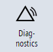
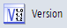
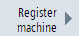
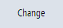
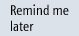

Requirement
Procedure
|  | 1. | Select the "Diagnostics" operating area. |
|  | 2. | Press the "Version" softkey.
|
|  | 3. | Press the "Register machine" softkey. The following information is displayed in the window to register the machine: Machine registering status Device-specific QR code for scanning using the camera app Input field for entering the registration code
|
| | 4. | Scan the QR code using the camera app to open the URL of the registration portal in the Internet browser on your mobile device. The URL of the registration portal opens in the address bar of the Internet browser. |
| | 5. | Enter the required data into the registration portal. After entering the data and subsequent verification, a 12-digit registration code is generated for you that is displayed in the registration portal. |
|  | 6. | Click on "Change". The "Registration ID" field is activated. |
| | 7. | Enter the registration code in the "Registration ID" field. |
After successful registration, the alarm "No information about SIEMENS registration available" is no longer displayed.
| Note |
Registration is carried out for each machine. If you wish to use the CF card from a registered machine in a non-registered machine, then you must re-register in the registration portal. |
Postponing registration
If your machine is not registered, then a message reminds you that the machine has not been registered.
You have the option of temporarily deactivating the message regarding the machine registration status or the missing machine registration.
|  | 1. | Press softkey "Remind later". Dialog "Machine registration" is displayed. |
 | 2. | Acknowledge with "OK".
The message about the missing machine registration status is deactivated for two weeks. Softkey "Remind later" is grayed out. After two weeks has elapsed, the message about the missing machine registration is displayed again. Softkey "Remind later" is again active. |
| Note |
If the machine was registered with the machine builder or OEM, softkey "Remind later" is grayed out. The message about the machine registration status is deactivated for two weeks. If the machine was registered with the end user, softkey "Remind later" and the message about the machine registration status are no longer displayed. |